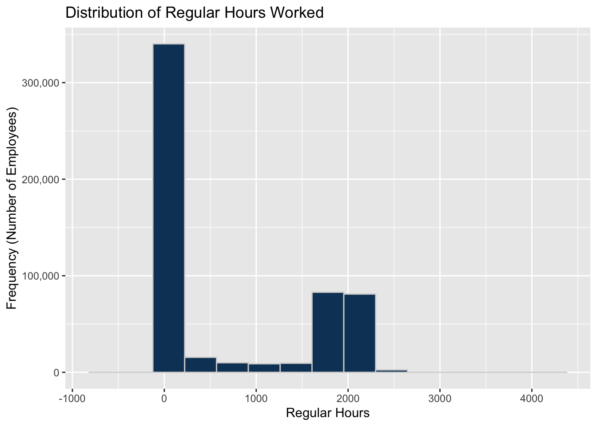
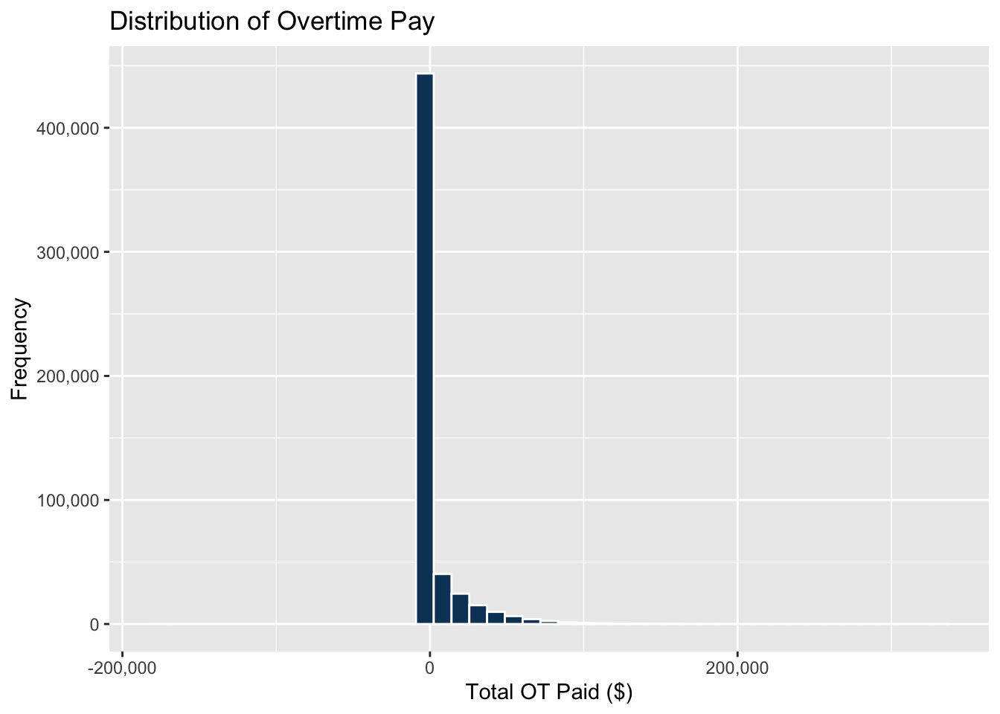
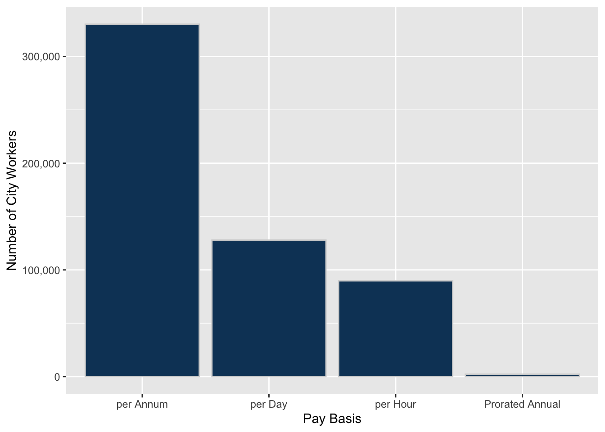
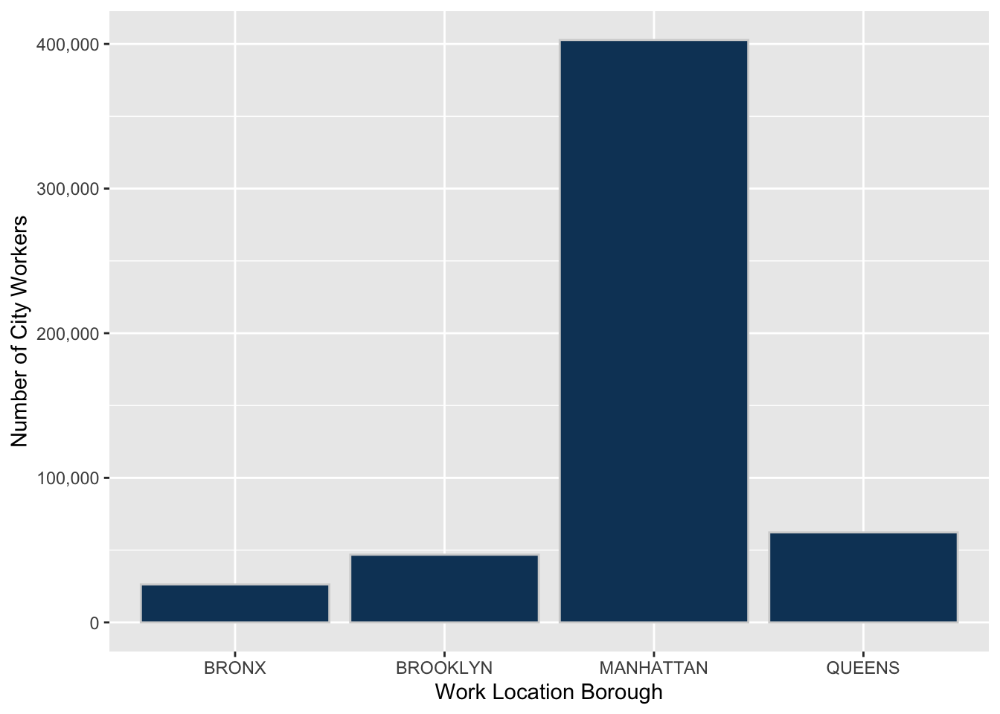
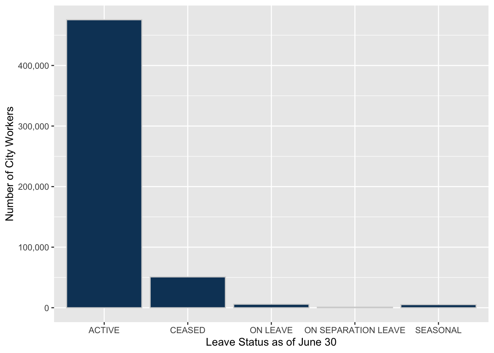
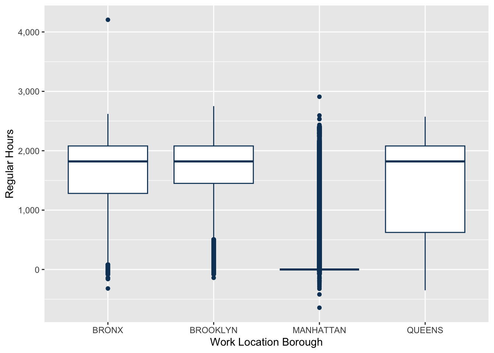
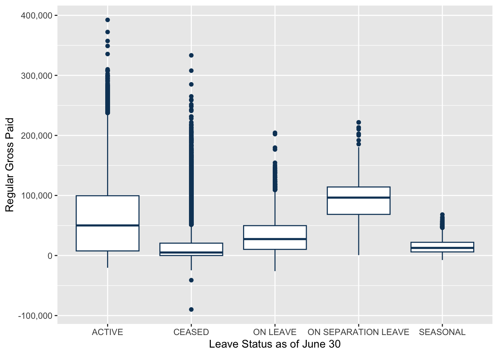

Analyzing NYC Payroll Data for Fiscal Year 2025
About The Data
The data shows annual salary and job details for each New York City employee from 2014 to 2025. It is collected by the NYC Office of Payroll Administration (OPA). However the data was filtered to only data in the five boroughs of NYC (Bronx, Brooklyn, Manhattan, Queens, Staten Island) and from the fiscal year 2025. Each row represents a city employee salary per fiscal year.
The original dataset can be found here.
Data Definition
Fiscal Year: The data was wrangled to have only 2025 data.Payroll NumberAgency Name: The Payroll agency that the employee works forLast Name: Last name of employeeFirst Name: First name of employeeMid Init: Middle initial of employeeAgency Start Date: Date which employee began working for their current agencyWork Location Borough: Borough of employee’s primary work location. Filtered to include only NYC boroughs (Bronx, Brooklyn, Manhattan, Queens, Staten Island)Title Description: Civil service title description of the employeeLeave Status as of June 30: Status of employee as of the close of the relevant fiscal year: Active, Ceased, or On LeaveBase Salary: Base Salary assigned to the employeePay Basis: Lists whether the employee is paid on an hourly, per diem or annual basisRegular Hours: Number of regular hours employee worked in the fiscal yearRegular Gross Paid: The amount paid to the employee for base salary during the fiscal yearOT Hours: Overtime Hours worked by employee in the fiscal yearTotal OT Paid: Total overtime pay paid to the employee in the fiscal yearTotal Other Pay: Includes any compensation in addition to gross salary and overtime pay, ie Differentials, lump sums, uniform allowance, meal allowance, retroactive pay increases, settlement amounts, and bonus pay, if applicable.
Bias in the Data
The borough of Staten Island is not at all represented in the data, and while it is the least populated borough, it still has municipal workers who are important to the data visualizations and interpretations.
Summary statistics
Quantitative variables
Regular Hours Worked
| Mean | Median | SD |
|---|---|---|
| 658.7369 | 0 | 889.8443 |
Total OT Paid

| Mean | Median | SD | Mode |
|---|---|---|---|
| 5311.321 | 0 | 15389.72 | 0 |
Ordinal variables
Pay Basis

| Pay Basis | Frequency | Percentage | Cumulative % |
|---|---|---|---|
| per Annum | 330289 | 60.0286431 | 60.4373895 |
| per Day | 127935 | 23.2516507 | 83.6890402 |
| per Hour | 89746 | 16.3109598 | 100.0000000 |
| Prorated Annual | 2249 | 0.4087463 | 0.4087463 |
The Mode for Pay Basis is per Annum.
Categorical variables
Work Location Borough

Leave Status as of June 30

| Leave Status as of June 30 | Count | Proportion | is_Mode |
|---|---|---|---|
| ACTIVE | 475482 | 0.8836182 | TRUE |
| CEASED | 50836 | 0.0944717 | FALSE |
| ON LEAVE | 5741 | 0.0106689 | FALSE |
| SEASONAL | 5111 | 0.0094981 | FALSE |
| ON SEPARATION LEAVE | 938 | 0.0017431 | FALSE |
Categorical Variable: Top 10 NYC Agencies by Employee Count
| Agency Name | Employee_Count | Proportion |
|---|---|---|
| DEPT OF ED PEDAGOGICAL | 104560 | 0.1943104 |
| DEPT OF ED PER SESSION TEACHER | 81516 | 0.1514863 |
| POLICE DEPARTMENT | 53866 | 0.1001026 |
| DEPT OF ED PARA PROFESSIONALS | 42851 | 0.0796327 |
| BOARD OF ELECTION POLL WORKERS | 36732 | 0.0682614 |
| DEPT OF ED HRLY SUPPORT STAFF | 23062 | 0.0428576 |
| FIRE DEPARTMENT | 18283 | 0.0339765 |
| DEPT OF ED PER DIEM TEACHERS | 16358 | 0.0303991 |
| DEPARTMENT OF EDUCATION ADMIN | 16095 | 0.0299104 |
| NYC HOUSING AUTHORITY | 14099 | 0.0262011 |
Total number of unique agencies represented: 152
Potential relationships
Pay Basis and Base Salary
Testable Hypotheses
Null hypothesis: There is no difference in base salary across pay bases.
Alternative hypothesis: Some pay bases receive higher base salaries than others.

The boxplot indicates a significant disparity in pay scales based on the Pay Basis. Workers paid per Annum have a much higher and more concentrated median salary compared to Hourly or Per Diem workers. The Prorated Annual category shows the most significant variance/skewing, and underlying reasons for this variation cannot be determined from this boxplot alone.
Regular Hours and Work Location Borough
Testable Hypotheses
Null hypothesis: There is no difference/variability in regular hours worked across NYC boroughs.
Alternative hypothesis: Some NYC borough(s) display more regular hours worked than others.

While the median regular hours appear similar across boroughs, Manhattan shows a wider spread and more extreme values, indicating greater variability in hours worked. However, the plot does not provide enough information to infer why the differences in median hours.
Regular Gross Paid and Leave Status as of June 30
Testable Hypotheses
Null hypothesis: There is no difference in gross pay across leave status.
Alternative hypothesis: Employees with certain leave statuses receive a higher gross pay than others.

Employees with Active or On Leave status tend to have higher regular gross pay, while those marked ‘Ceased’ have lower values. This pattern may show differences in time worked during the fiscal year, but this cannot be confirmed without additional data.